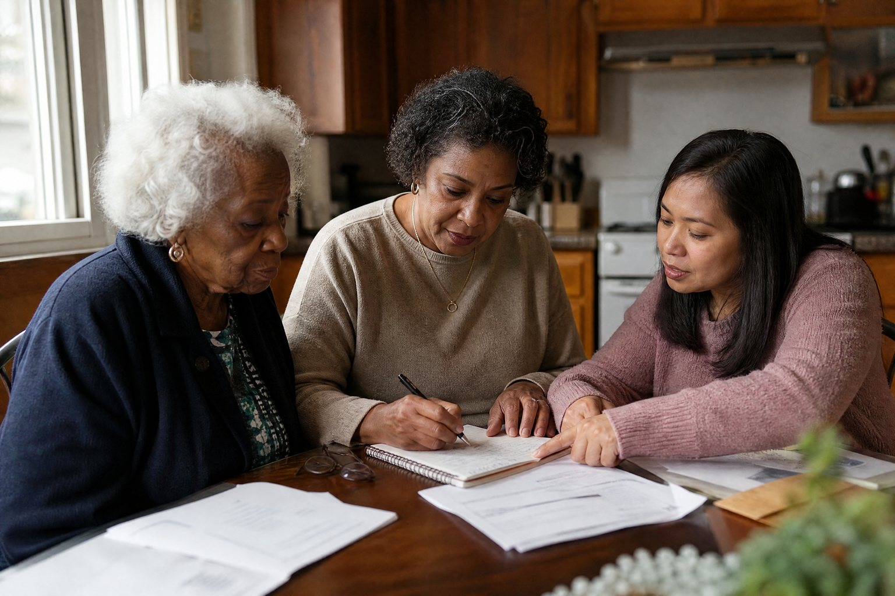
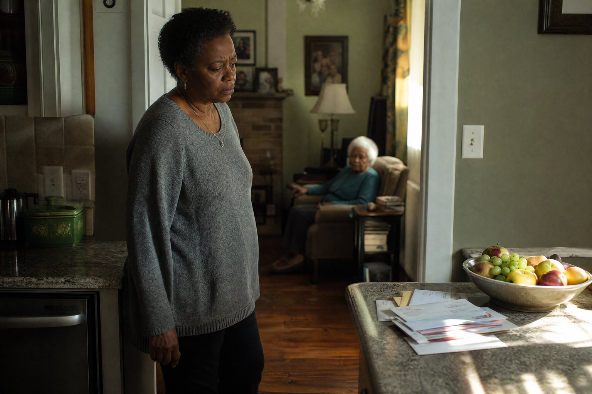
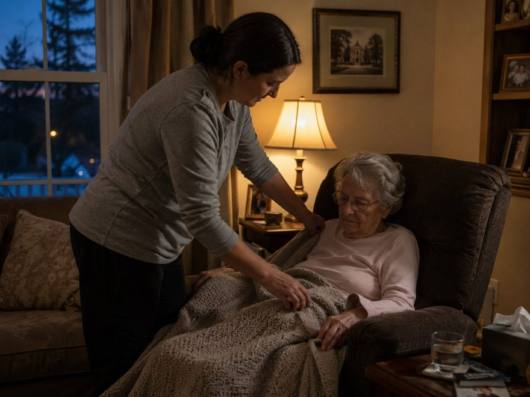
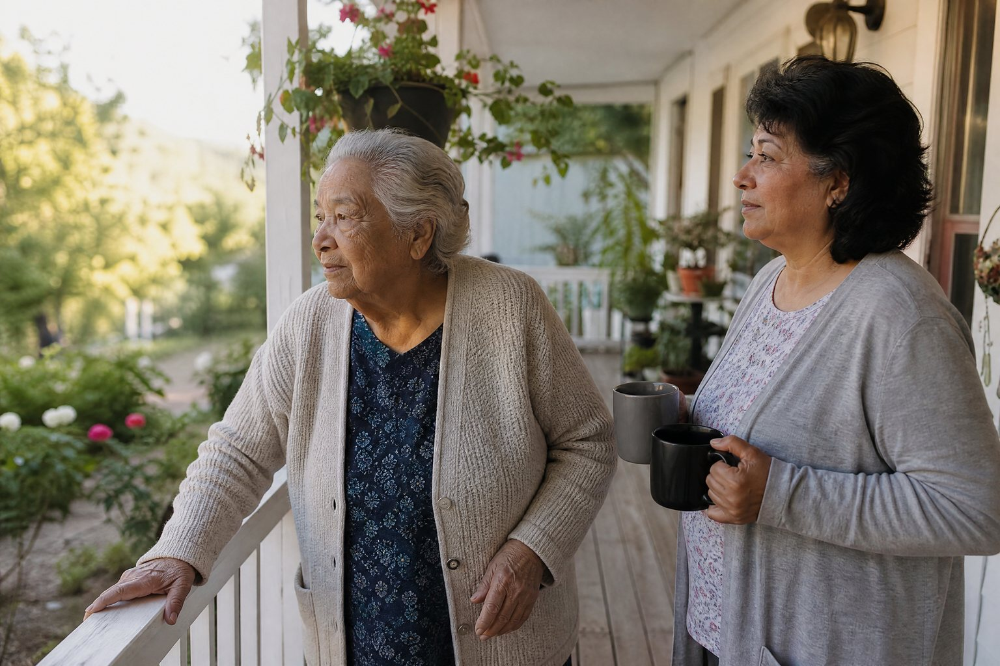
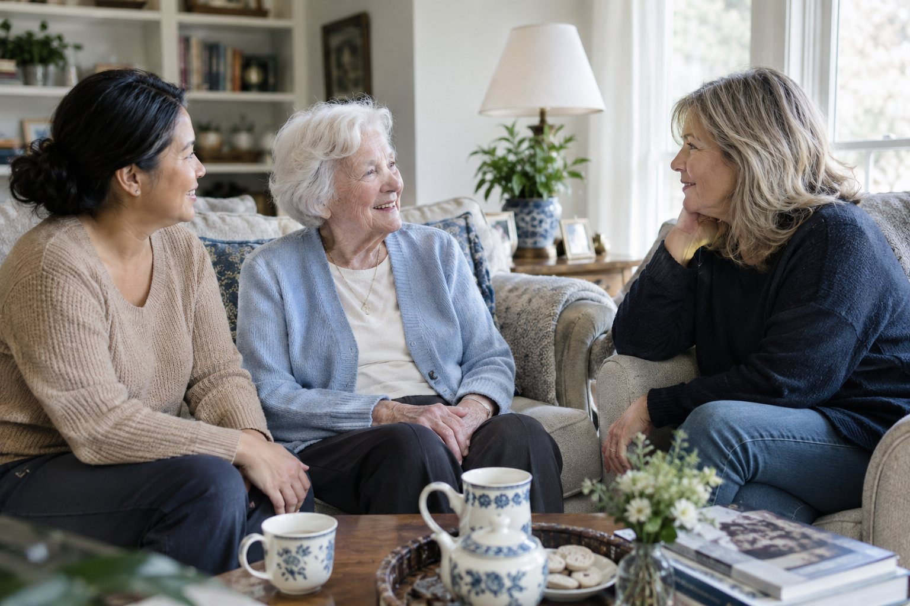
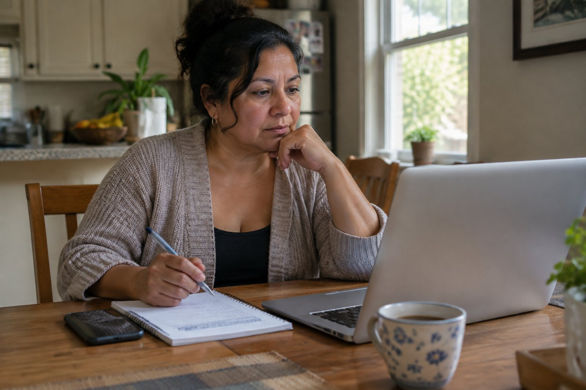

A little clarity.
One thing at a time.
Practical help for the questions on your mind. Read here, or share with someone in your family.
One less thing
to figure out alone.
Practical guides for you and Mom.

11 questions to ask before letting a caregiver into Mom’s home
Read the guide
Coming home from the hospital: the first week
Read the guide
When Mom says, “I don’t need help.”
Read the guide
What changes the cost of care at home?
Read the guide
How families pay for care at home
Read the guide
Ten signs it may be time for a little help
Read the guide
You promised her she’d never go to a home. Here is what that can mean.
Read the guide
When you’re the only one who shows up
Read the guide
When the nights are the hard part
Read the guideCaring for Mom from a few hours away
Read the guide
Memory loss at home: what a good day looks like
Read the guide
Home care or assisted living? How to think it through
Read the guide
What is Pink Glove Care?
Read the answerIs Pink Glove Care legit?
Read the answer
Pink Glove Care compared with a referral site
Read the answerHow we choose and introduce caregivers
Read the answerA little more
breathing room
starts here.
You don’t need to have all the answers. Tell us what’s becoming hard, and we’ll help you think through the next step.
Your request comes to Pink Glove Care—not a network of providers. We don’t sell your inquiry.